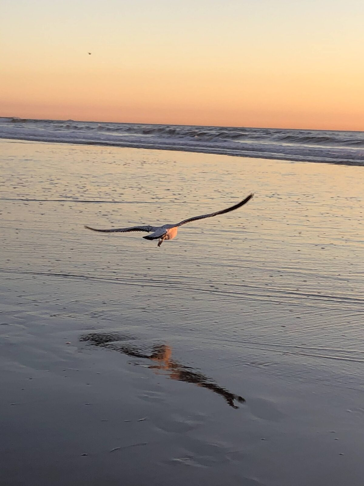

🏖️ San Diego
A relaxed coastal weekend in San Diego mixing iconic attractions, oceanfront walks, and water sports. Highlights include La Jolla Cove, Balboa Park, and sunsets over the Pacific.


🏖️
🏖️
🗺️ Itinerary
Day 1
Arrival & city
Evening arrival into San Diego. Settle in and explore.
Day 2
Coast & Oceanside
Beach and coastal time, heading up toward Oceanside.
Day 3
Breakfast & departure
Relaxed breakfast before an afternoon flight home.
📌 Things to do
- San Diego Zoo — world-famous zoo in Balboa Park
- La Jolla Cove — stunning views, seals, and snorkeling; combine with La Jolla Shores
- Sunset Cliffs Natural Park — sunset views; a sea cave is accessible at low tide
- Torrey Pines State Natural Reserve — coastal bluffs and sunset spot
- Balboa Park — gardens, museums, and architecture
- Seaport Village & Embarcadero — waterfront stroll to Tuna Harbor Park
- Stand-up paddleboarding — rentals at Shelter Island's calm waters
- Wakeboarding & water skiing charters
- Encinitas Meditation Garden — peaceful ocean-view gardens
🛏️ Where to stay
- Downtown / harbor area
- Oceanside — coastal town north of the city
💡 Good to know
- Time a visit to the Sunset Cliffs sea cave for low tide.
- Pair La Jolla Cove with nearby La Jolla Shores for beach time.